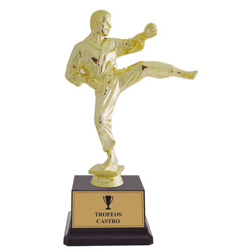
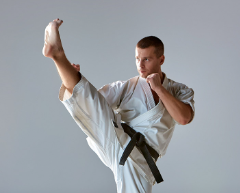
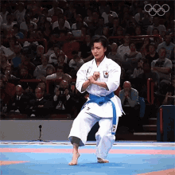
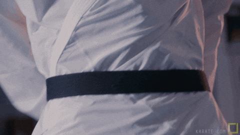

El karate es una disciplina de combate y autodefensa que utiliza golpes con los puños, patadas, rodillazos y codazos, así como técnicas de defensa con las manos, los codos y los pies. Se enfoca en el desarrollo de la fuerza mental y física, promoviendo valores como la disciplina, el respeto y la humildad.
El karate se originó en Okinawa, Japón, y tiene influencias de las artes marciales chinas. A lo largo de los años, se ha expandido por todo el mundo, convirtiéndose en un deporte olímpico y una disciplina de autodefensa muy popular.
Algunos de los equipos que tenemos en nuestra academia incluyen:
Los entrenadores que lideran nuestros equipos son:
Los horarios de los entrenamientos son los siguientes:
Los grupos de edad para cada entrenador son:


